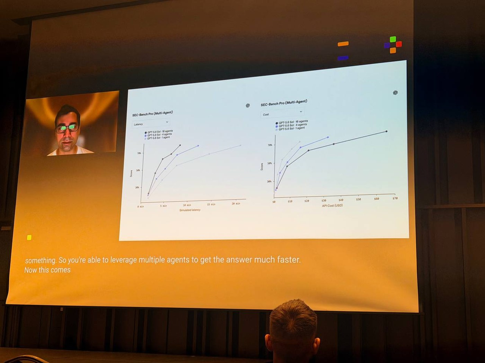
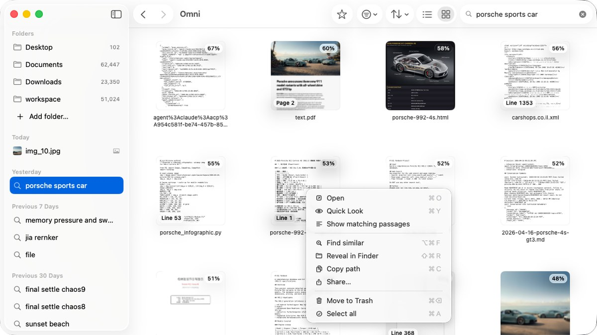

Encoders, data, indexes and rerankers all improve before the first query.
Recent LLMs found a second axis: compute at inference
With test-time scaling, the same model does more work per query and quality rises with the budget.

Having a bot think for just 20 seconds in a hand of poker got the same performance boost as scaling up the model by 100,000x and training it for 100,000 times longer.Noam Brown, OpenAI, 2024
Fun fact: search has always lived on that axis.
Embedding, retrieval, reranking, expansion and fusion all run after the user presses Enter.
Inference time is a currency, not a KPI
Until now: a KPI
Inference time is a KPI
Latency is a limit written into the SLA. Better accuracy requires a bigger model.
becomes
In this talk: a currency
Inference time is a currency
Keep the weights and raise the budget from 10 ms to 100 ms. What does it buy?
buys
Relevance
Better ranking on the same task.
buys
A new capability
Tasks the model was never trained for.
Four training-free demos
Each one buys relevance or a new capability with compute at test time.
01
Retrieval programs
Higher relevance from the same frozen encoder.
02
Open-vocabulary tagger
Annotate photos with any words.
03
Semantic highlighting
A reranker highlights the passages that match.
04
Reusable search pipelines
An agent builds small pipelines and reuses them in long-horizon tasks.
Three ways to spend compute on a frozen model
All three keep the weights fixed and differ in where new information comes from.
A
Deeper pass
Read every token or patch vector of the pass you already ran.
New information: from inside the pass
B
More passes
Run the encoder again on new views, such as sentences or image crops.
New information: from the input
C
Calibration
Transform existing vectors with whitening, label propagation or optimal transport.
New information: from a global prior
01
Programs on a frozen encoder
Current small embedders are distilled from LLMs
If test-time compute works in the LLM representation space, distilled encoders may inherit it.
Mistral-7B
→
E5-MistralSFR-EmbeddingGritLMNV-Embedbge-en-icl
Qwen3
→
qwen3-embedjina-embeddings-v5
Gemma 3
→
EmbeddingGemma
LLaMA
→
RepLLaMALLM2Vec
First raised in jina.ai/news/scaling-test-time-compute-for-embedding-models
Scoring runs from one cosine to late interaction
A single-vector encoder can split a document into sentences and keep the best match.
single-vector cosine
\( \cos(q,\,d) \)
one vector per document
frozen baseline
sentence MaxSim
\( \max_{s}\ \cos(q,\,s) \)
same encoder, one vector per sentence
test-time compute
ColBERT multi-vector
\( \sum_i \max_j\ \cos(q_i,\,d_j) \)
max over document tokens for each query token
needs a multi-vector model
Rules: only the frozen encoder in the query path, with no LLM, second retriever or learned parameters. One embed_fn call is one unit of compute.
An LLM agent writes programs over the frozen encoder
Each round changes one program, evaluates it at a fixed budget and keeps it only if the metric improves.
Proposer
LLM agent, Opus 4.6
→
Program P
Python over j-v5-nano
→
Evaluator
ΔnDCG, 14 tasks
→
Memory
JSONL file
→
Registry
144 programs
memory conditions the next program
writesone program per round
→
encoder239M frozen
→
scores14 MMTEB tasks ΔnDCG@10
→
logsΔ, cost, parent and lesson
→
keeps144 scored programs
The evaluator rejects hyperparameters, task-specific routing, external models and learned parameters.
We search on one encoder and test on three others
Discovery · the loop searches here
j-v5-nano
239M · Jina
discovery encoder
small and fast, so each round is quick
searched over14 MMTEB Tier-1 tasks · legal, financial, long-doc, general
It reuses the patch rows of the embedding pass. Tags become search snippets for images, video and scanned PDFs.
~0.6 ms
per image
~4%
of the embedding step
64
images calibrate the prior

03
One call replaces an index
Omni builds no index and spends compute on rescoring
01 SCANevery row, 1 bit
02 SHORTLISTtop C, coarse
03 RESCOREexact, C rows
04 TOP-Kexact order
Teal marks what one query reads.
Every query scans the whole corpus. A graph index would add 256 bytes of links per row, 0.95 GB at four million chunks, close to three times the scanned matrix, and edits keep invalidating it.
The scan reads a 1-bit replica. Exact vectors are read only for the shortlist and set the final order.
Shortlist size: min(4096, max(1024, topK×32))
Let the candidates see each other in one forward pass
jina-reranker-v3 (0.6B) reads the query and up to 64 documents in one context.
Bi-encodereach document scored alone
Each document vector is computed without the others.
Listwiseall candidates in one context
Each document is scored after attending to every other candidate.